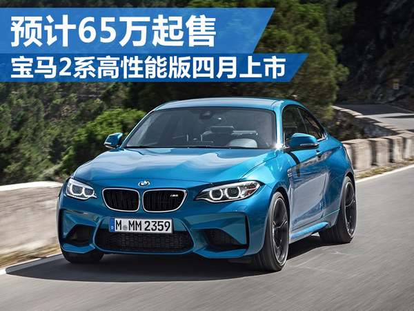
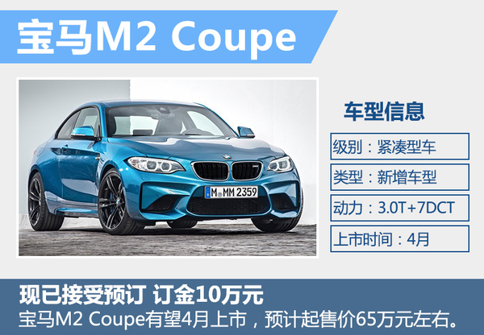
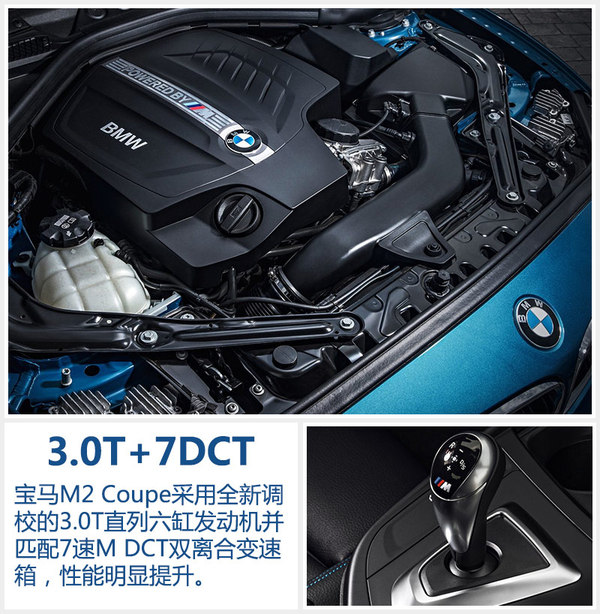
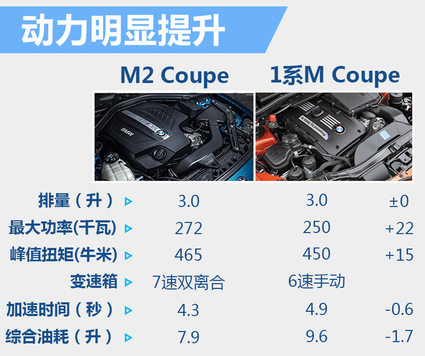
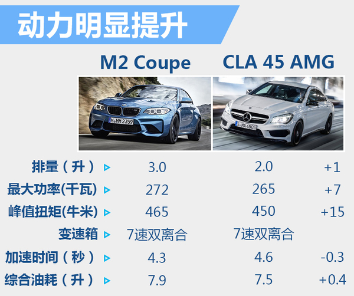
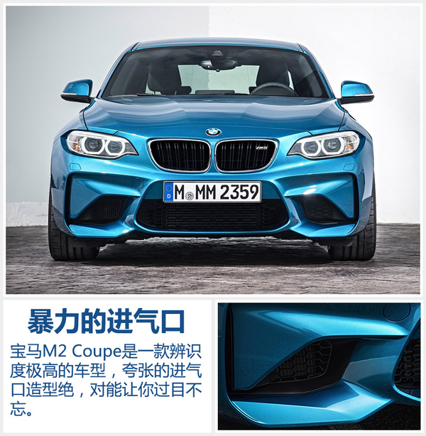
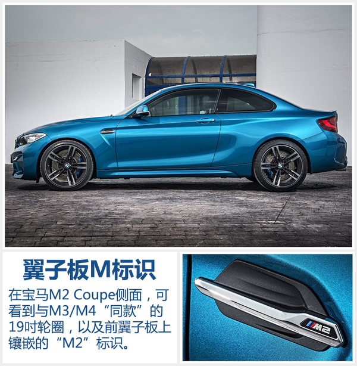
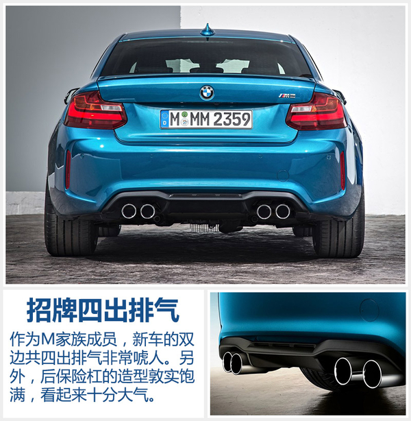
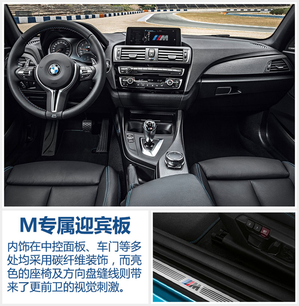
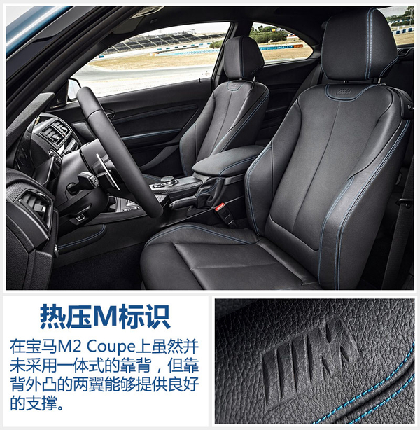

NEWS
宝马2系高性能版四月上市 预计65万起售
2016年02月21日 10:53 来源：网通社
宝马品牌在2015年10月发布了1系M Coupe的“继任者”——宝马M2 Coupe。这款宝马品牌旗下全新的紧凑型三厢高性能车，即将投放到中国市场当中。网通社在走访北京多家宝马授权经销商后获悉：宝马M2 Coupe现已接受预订，订金10万元。另外，网通社还了解到，新车在中国市场起售价预计65万元左右，会在4月开幕的北京车展期间亮相，并有望于车展前后公布官方指导售价。
 宝马1系M Coupe在2011年的上海车展上进行了国内首次亮相，随后在同年内以限量的方式少量投入到中国市场，仅提供6速手动变速箱的车型。时隔5年，宝马即将在今年的北京车展为中国带来全新的紧凑型高性能车，这顺应了当下中国市场消费者年轻化的趋势。目前宝马M2 Coupe在北京地区，已开始以10万元订金接受预定。根据宝马授权经销商透露的消息，第一批新车预计将在今年6月交付到车主手中。宝马M2 Coupe的起售价格有望控制在70万元以内，正式投放市场之后将大幅拉低宝马M系列高性能车的价格“门槛”。
 宝马M2 Coupe采用了全新调校的3.0升直列六缸涡轮增压发动机，最大功率272千瓦、峰值扭矩465牛米，与宝马1系M Coupe相比两项数据分别提升了22千瓦和15牛米。另外，宝马M2 Coupe还具备overboost超增压功能，在短时间内扭矩可增至500牛米。在传动系统方面，新车提供匹配7速M DCT双离合或6速手动两款变速箱供消费者选择，在中国市场预计将仅提供采用7速M DCT双离合变速箱的版本。从性能上看，无论是加速还是燃油经济性都比1系M Coupe有着较为明显的提升。
对于宝马M2 Coupe而言，显而易见奔驰旗下的CLA 45 AMG 4MATIC是最大的竞争对手。M2 Coupe没有推出之前，CLA 45 AMG 4MATIC凭借高效的2.0T四缸发动机“以小胜大”，在性能方面优于采用3.0T六缸发动机的宝马1系M Coupe。而M2 Coupe的推出则为宝马挽回了六缸机的“颜面”，但也只是稍强于对手。
了解了动力系统的变化之后，再来看一看宝马M2 Coupe的外观。对于一款紧凑高性能车而言，大多车型的外观都会比普通版本运动很多。而宝马M2 Coupe的外观绝对称得上充满了野性。在前脸部分，激进的下进气口占前脸纵向的比例超过了一半，双肾格栅上悬挂的“M2”标识更是直接亮明了“身份”。更值得一提的是，宝马M2 Coupe的头灯与普通版2系Coupe一样并没有采用宝马招牌的“开眼角”设计，但LED头灯成为了标配。
将视线转向宝马M2 Coupe的侧面，紧凑的身形看起来十分灵活而双门、溜背的设计更突显了纯正的Coupe风格。当然由此造成了后排乘客上下车的不便利和后排空间的狭小，但显然这款激进的小车不是为了“空间至上”之人所设计的。另外，前翼子板上加以镀铬装饰的“M2”再一次强调着该车不同于普通2系Coupe的身份。而19吋的“大脚”竟采用了与“老大哥”M3和M4“同款”的双色轮圈。虽然从刹车卡钳的活塞数可以看出端倪（M2 Coupe前轮为对向4活塞；M3/M4为对向6活塞），但这款双五辐轮圈非常令人“赏心悦目”。
与前脸的夸张和激进相比，宝马M2 Coupe的尾部造型更加简单和圆润。双边共四出的排气布局在下扰流器两端，提醒着后车这是个不好惹的“小家伙”。同时，宽厚而敦实的后保险杠占了尾部很大的比例和前脸进行呼应，看起来十分大气。
 在新车的内部，宝马M2 Coupe带来了不小的惊喜。M系列的三辐多功能方向盘，绝对可以称为是宝马最美的方向盘之一。7速双离合变速箱的挡杆，也采用了与M3/M4“同款”的设计。另外，在车内多处采用碳纤维纹路装饰并配备有铝制的M家族专属迎宾踏板，再加以亮色的皮革缝线，宝马M2 Coupe的内饰充满了激发驾驶欲望的元素。